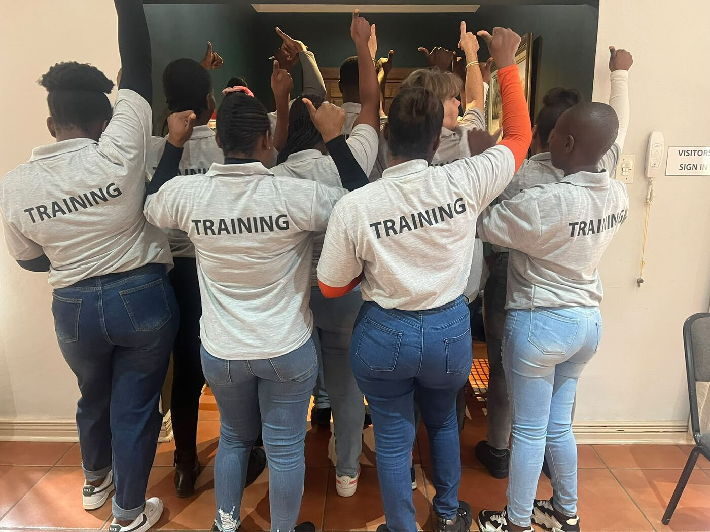

QT Training (Pty) Ltd · Reg. 2001/124951/07 · WRSETA Accreditation No. 620

QT Training is a South African skills development and workplace training company that helps employers turn compliance obligations into practical development opportunities. Founded in 2011, we support employers, learners and funding partners through the full training lifecycle — from skills planning and funding applications to learner recruitment, delivery, workplace coordination, quality assurance and project close-out.
Our work spans employed, unemployed and disabled learner programmes.
To develop and empower people to maximise their potential while helping employers build capable, compliant and productive workplaces. We deliver with accountability, integrity, respect, commitment and professionalism — quality assurance and learner support are built into every project, not treated as afterthoughts.
Skills audits, Workplace Skills Plans, Annual Training Reports, training needs analysis, B-BBEE skills development support, strategic training plans.
Discretionary grant and expression-of-interest support, proposal development, stakeholder coordination, contracting readiness, evidence management.
Recruitment, selection, induction, programme administration, facilitator deployment, workplace coordination, learner support, close-out.
Facilitated learning, workplace-based learning, assessment, moderation coordination, remediation, portfolio-of-evidence management.
EE facilitation and reporting support, committee development, awareness training, documentation systems, selected OHS support.
Customised short courses, mentoring/coaching, monitoring & evaluation prep, SETA liaison, learner placement, training records/audit files/management reporting.
Confirm business need, target group, workplace realities, qualification fit and compliance requirements.
Implementation plan, delivery calendar, learner support model, resource plan, reporting framework.
Recruit and select learners, contracting, induction, materials, align host workplaces.
Facilitate theory and practical learning, manage attendance, learner support, stakeholder communication.
Track portfolios, assessments, moderation, remediation, audit-ready records.
Exit, certification follow-up, absorption discussions, testimonials, lessons learned.
“Creating and managing opportunities and equipping people with a reachable dream is our core passion.”
Machél founded QT Training to help employers address skills development, Employment Equity and workplace learning requirements through practical, accountable implementation. She brings extensive national SDF and training-project experience, with particular depth in wholesale and retail. Her strengths include identifying viable learning pathways, aligning funding and business needs, managing stakeholders and keeping complex learner projects focused on completion and workplace value.
26 years’ SDF experience. Recipient of the 2025/26 W&RSETA Ambassadors Award for contribution to skills development and learner advancement in the sector.
WSPs/ATRs, learnerships, occupational and legacy programmes, retail supervision, store operations, sales, dispatch and receiving.
Skills planning for permanent/seasonal workforces, plant production learning, workplace approvals, progression pathways.
Funding readiness, learner administration, workplace due diligence, recruitment support, host-employer coordination.
Entrepreneurship, customer service, sales, financial capability, business support, rural delivery models.
Forum establishment, awareness sessions, meeting documentation, reporting support, workplace policy development.
From skills audits to learner graduation — we handle the full lifecycle.
Contact Us